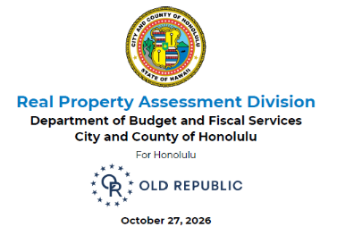

{{title}}
The responses given within the FAQ's are not legal or professional advice. The Real Property Assessment Division (RPAD) provides general information regarding real property tax assessments. Any persons with specific inquiries regarding ownership, real property tax law and the appraisal process are urged to consult with an attorney or appropriate professional. Mahalo.
Click a question to see the answer.
{{s.name}} ({{s.count}} questions)
{{ap.text}}
[Answer from current FAQ]
Examples of the property records available to taxpayers on request, and the codes used on them. Click a document to open the PDF.
Record Examples
Codes
{{v.title}}
{{v.desc}}
Guides to help you understand your assessment and property taxes. Each button is a picture of the guide’s cover (placeholders shown) – click it to open the PDF.
Click a brochure to open and download it (PDF). Each button is a picture of the brochure's real cover (placeholders shown) – click it to open the PDF.
Recently passed amendments
- ORD 19-032 – ROH 8-7.1, Bed and Breakfast classification (PDF)
- ORD 20-13 – ROH 8-10.33, exemption for qualifying affordable rental housing units (PDF)
Chapter 8 – Real Property Tax
- Article 1 – Administration
- Article 2 – Notice of Assessments – Assessment Lists
- Article 3 – Tax Bills, Payments and Penalties
- Article 4 – Remissions
- Article 5 – Liens – Foreclosures
- Article 6 – Rate – Levy
- Article 7 – Valuations
- Article 8 – Wasteland Development
- Article 9 – Nontaxable Property – Assessment
- Article 10 – Exemptions Exhibit 1 Central Kakaʻako Industrial Zone
- Article 11 – Determination of Rates
- Article 12 – Appeals
- Article 13 – County Tax Credit
- Article 14 – Tax Credit for Automatic Sprinkler System
- Article 15 – Severability
- Article 16 – Tax Credit for Septic Tank to Replace Household Cesspool
Revised Charter of the City and County of Honolulu
The City Charter is published on the City's main website.
View the Revised Charter on honolulu.gov ↗Administrative rules for real property assessment. Click a chapter to open the PDF.
Residential A is a tax classification for higher-value residential property without a home exemption. It was created by Ordinance 13-33 (effective for tax years starting July 1, 2014) and clarified by Ordinance 13-41 for vacant residential land.
Who is classified Residential A?
Under ROH Section 8-7.1(c)(4), Residential A includes:
- Parcels with no more than two single-family homes, assessed at $1,000,000 or more, with no home exemption, zoned R-3.5, R-5, R-7.5, R-10 or R-20 (or dedicated for residential use).
- Vacant land zoned R-3.5 to R-20 assessed at $1,000,000 or more.
- Condominium units assessed at $1,000,000 or more with no home exemption.
Military housing, on or off base, is excluded.
How the tax is calculated
Since July 1, 2017 (Ordinance 17-12), Residential A has two tiers: one rate on the first $1,000,000 of net taxable value and a higher rate on the amount above $1,000,000.
| Total Assessed Value | $1,600,000 |
| Home Exemption | $120,000 |
| Classification | Residential |
| Tax Rate | $3.50 per $1,000 of net taxable |
| Total Assessed Value | $1,600,000 |
| Home Exemption | $0 |
| Classification | Residential A |
| Tier 1 (first $1M) | $4.00 per $1,000 of net taxable |
| Tier 2 (in excess of $1M) | $11.40 per $1,000 of net taxable |
Examples match the current Residential A page – confirm rates and exemption amount are still current before moving.
RPAD sets assessed values; Treasury bills and collects the tax.
The Real Property Assessment Division (RPAD) provides general information regarding real property tax assessments; it is not legal or professional advice. Any persons with specific inquiries regarding ownership, real property tax law and the appraisal process are urged to consult with an attorney or appropriate professional. Mahalo.
[Confirm wording matches the disclaimer on our current Tax Bills page]
Recent presentations and announcements from RPAD, newest first. Click a title slide to open the presentation.

 [Title slide]
[Title slide]
Under Act 187, protected personal information of covered public servants can be removed from RPAD's website. Requests must come from an authorized agency official – the public servant can't submit directly.
Instructions for agencies
- Who can submit: the executive or administrative head of a Hawaiʻi state department or agency, the Administrative Director of the Hawaiʻi State Judiciary, or the Clerk of Court for the U.S. District Court for the District of Hawaiʻi.
- Fill out the Excel form: full name, site address and TMK – one TMK per row.
- Email it from the official's address to bfsrpmailbox@honolulu.gov with "ACT 187" in the subject line.
- Deadline: requests are due by the 1st of each month.